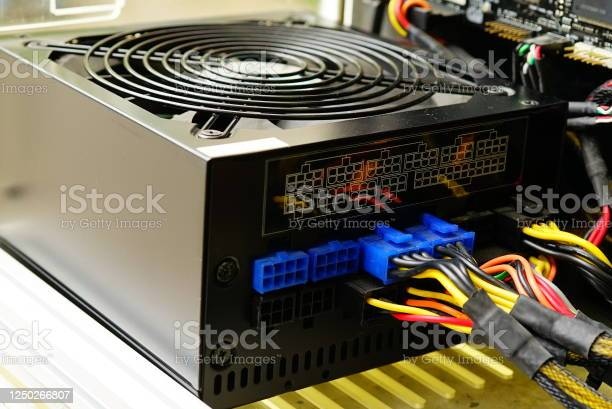

Power Supply
A power supply (PS) is an hardware component of the power supply converts a 110-115 or 220-230 volt AC (alternating current).
The computer power supplly is the electrical source of all components
of a computer. though it is one of the neglected one compare to the other parts, power supply is a must for a system.
It is an internal IT hardware component. Despite the name, power supply units (PSU) Power supply units do not supply systems
with power - instead thay convert it. specifically, a power supply converts the alternating high voltage current (AC)
into direct current (DC), and they also regulate the DC output voltage to the fine tolerances required for modern computing components

Go To
Back to Home